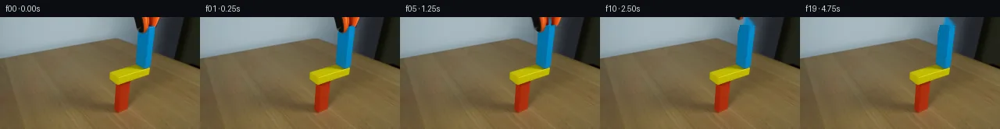

![首帧]()

Round 00
2026-11-05T10:05:26.025314+00:00像素候选变化代码 +193/−0inspection 更新
pixels e4a6738d0ec80129 · code 8b6a53d78e24d0fc
查看本轮 generate.py 真实 diff
--- previous/generate.py +++ current/generate.py @@ -0,0 +1,193 @@ +#!/usr/bin/env python3 +"""Generate a 20-frame pixel continuation from the supplied first frame. + +The photographed scene is retained as the plate. Only the cropped grabber at +the top edge is layer-separated, moved, and removed. No renderer or external +asset is used. +""" + +from pathlib import Path + +import cv2 +import numpy as np +from PIL import Image, ImageDraw + +from artifact_io import save + + +ROOT = Path(__file__).resolve().parent +H, W = 144, 256 + + +def polygon_mask(points): + mask = np.zeros((H, W), np.uint8) + cv2.fillPoly(mask, [np.asarray(points, np.int32)], 255) + return mask + + +def shift_layer(rgb, alpha, dx, dy): + """Translate an RGB/alpha layer, clipping naturally at the image edge.""" + matrix = np.float32([[1, 0, dx], [0, 1, dy]]) + moved_rgb = cv2.warpAffine( + rgb, matrix, (W, H), flags=cv2.INTER_LINEAR, + borderMode=cv2.BORDER_CONSTANT, borderValue=(0, 0, 0) + ) + moved_alpha = cv2.warpAffine( + alpha, matrix, (W, H), flags=cv2.INTER_LINEAR, + borderMode=cv2.BORDER_CONSTANT, borderValue=0 + ) + return moved_rgb, moved_alpha + + +def composite(dst, src, alpha): + a = alpha.astype(np.float32)[..., None] / 255.0 + return np.clip(dst.astype(np.float32) * (1.0 - a) + src.astype(np.float32) * a, + 0, 255).astype(np.uint8) + + +def blue_texture(source, full_blue): + """Perspective-copy visible blue wood upward into its occluded cap.""" + result = source.copy() + ys, xs = np.where(full_blue > 0) + for y, x in zip(ys, xs): + # The photographed block tapers slightly toward its lower end. + left = 179.0 - 0.10 * (y - 10) + right = 199.0 - 0.12 * (y - 10) + u = np.clip((x - left) / max(1.0, right - left), 0.0, 1.0) + donor_y = int(np.clip(max(26, y + 20), 26, 58)) + donor_left = 179.0 - 0.10 * (donor_y - 10) + donor_right = 199.0 - 0.12 * (donor_y - 10) + donor_x = int(np.clip(round(donor_left + u * (donor_right - donor_left)), 174, 196)) + result[y, x] = source[donor_y, donor_x] + return result + + +def build_frames(source): + # Tight silhouette containing the cropped black/orange grabber. The broad + # cleanup mask also removes its antialiased boundary from the static plate. + grabber_silhouette = polygon_mask([ + (170, 0), (203, 0), (203, 8), (200, 12), (193, 13), + (188, 21), (181, 23), (176, 20), (173, 14), (171, 5) + ]) + grabber_silhouette = cv2.dilate(grabber_silhouette, np.ones((3, 3), np.uint8), 1) + grabber_silhouette[24:] = 0 + + # Reconstruct the wall/dark-panel plate under the tool. + base = cv2.inpaint(source, grabber_silhouette, 4, cv2.INPAINT_TELEA) + + # The tool occludes the top cap of the blue block. Extend the actual blue + # texture according to the block's measured perspective and restore it over + # the inpainted background wherever the block physically lies. + full_blue = polygon_mask([(179, 10), (199, 11), (193, 66), (174, 66), (176, 23)]) + predicted_blue = blue_texture(source, full_blue) + restore_blue = (full_blue > 0) & (grabber_silhouette > 0) + base[restore_blue] = predicted_blue[restore_blue] + + # Existing visible blue pixels belong to the stationary block, not the + # moving grabber. Exclude them from both moving jaw layers. … diff truncated; 106 more lines …